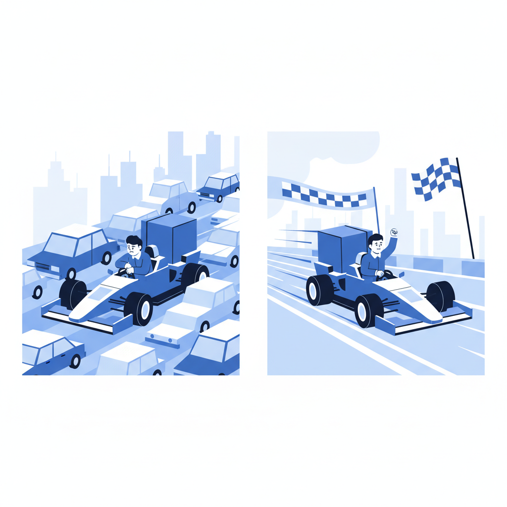
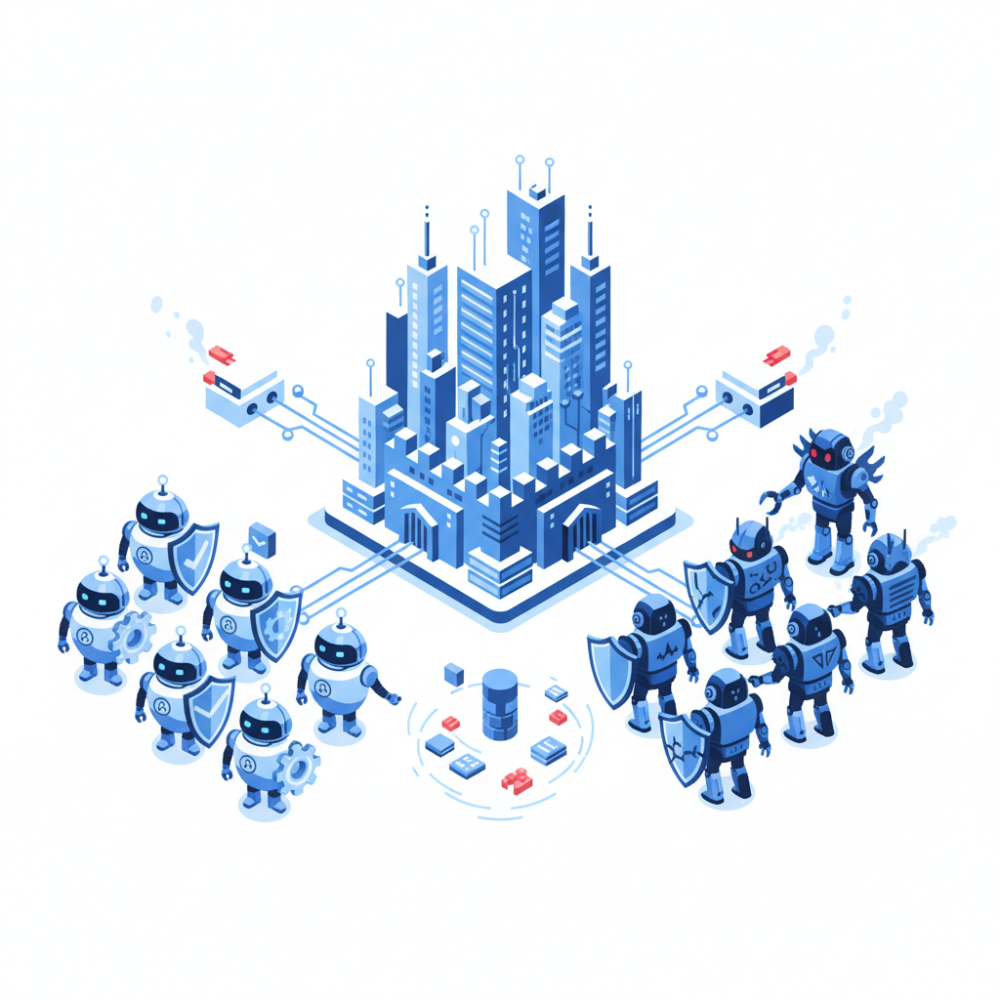
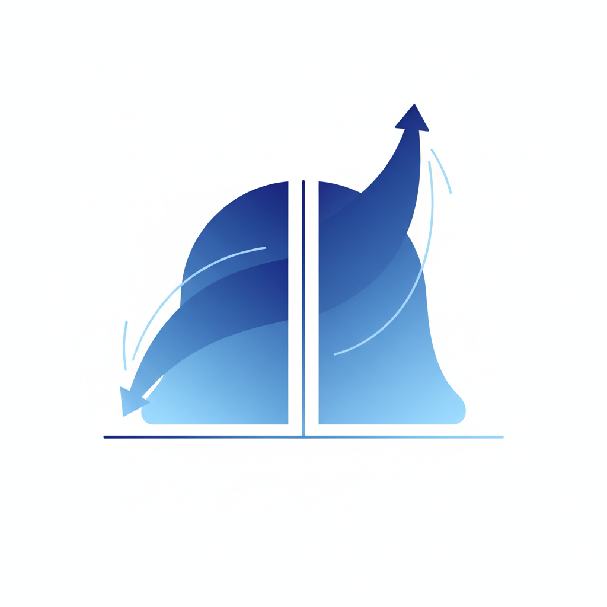

一、数字不会撒谎，撒谎的是解读数字的人
PwC这份《2026 AI Performance Study》调查了25个行业、1217位高管。结果如下：
AI领跑企业每投入1美元，平均回收3.70美元。最顶尖的那批，1美元换10.30美元。
而56%的企业表示，AI没给自己带来任何显著的财务收益。
95%的生成式AI试点项目，没有产生直接的财务回报。
九成五。
这不是"技术不成熟"的问题。今年斯坦福AI指数报告刚出炉——在SWE-bench编码基准测试里，AI的表现从去年的60%飙到了接近100%。博士级科学问答、多模态推理、竞赛数学，AI全面达到或超过人类基线。
技术层面已经接近满分了。可赚钱的人还是那20%。
红杉资本算过一笔账：按照当前的基础设施投入，全球AI公司需要每年赚6000亿美元才能打平。实际收入呢？大约1000亿。中间差了5000亿的缺口。
这5000亿从哪来？从你的AI预算来。从你买的API调用来。从你给AI供应商交的学费来。
你以为自己在"拥抱AI"，实际上你在帮别人回本（笑）。
二、赢家的牌桌和输家的PPT
PwC的报告里藏着一个更扎心的细节。
那20%的赢家，并不是技术最好的公司，也不是砸钱最多的公司。他们的共同点只有一个：用AI重构了业务模型，而不是用AI装点了现有流程。
AI领跑者把AI用于"业务再造"的概率是其他公司的2.6倍。用AI切入新市场的概率是同行的2到3倍。而最显著的特征——让AI自主决策的比例，以每年2.8倍于同行的速度在增长。
赢家让AI做决定，输家让AI做汇报。
80%的企业怎么用AI呢？让AI帮员工写邮件。让AI帮客服回消息。让AI生成一份看起来很专业的报告。
这些事情，AI确实能做。但这些事情不产生利润，只减少摩擦。你省下了一个实习生的工资，但你的商业模式没变过一个字节。
这就好比你买了一辆赛车，结果只用来送外卖。车是好车，跑得也快，但你赚的还是每单五块钱。
真正赚钱的那20%，在用同一辆赛车参加比赛，赢了奖金，拿了赞助，还卖了周边（笑）。
差距不在工具，在吃法。你拿AI当打字机，人家拿AI当印钞机，然后你还疑惑："为什么我花了同样的钱，效果不一样？"
因为你不一样。

三、中国AI赢了牌面，但利润呢？
2026年2月的第二周，中国大模型的单周调用量达到4.12万亿Token，首次超过了美国的2.94万亿。
这个数字传遍了所有科技媒体。标题清一色的画风："中国AI调用量超越美国！""中国大模型全球登顶！"
确实登顶了。但登顶的是调用量，不是利润。
来看价格：DeepSeek V3.2的API定价是每百万Token 0.28美元。同期Anthropic Claude Opus的定价是5美元。OpenAI GPT-5.4是2.50美元。
中国最火的模型，比美国最贵的模型便宜了18倍。
这意味着什么？意味着中国模型要跑出美国模型同样的收入，需要18倍的调用量。我们现在超了多少？1.4倍。
距离"赢了利润"还差大约13倍的距离，客气地说。
4月初，OpenRouter平台调用量前十里有6个中国模型——小米MiMo-V2-Pro以4.82万亿Token登顶全球第一。与此同时，斯坦福AI指数显示美国对AI的私人投资是2859亿美元，中国是124亿美元。差了23倍。
一边在拼命跑量，一边在拼命砸钱。这场仗到底谁赢了？
有意思的是，风向已经开始变了。2026年2月，智谱AI宣布API涨价，海外订阅价格涨幅30%到60%。月之暗面旗下的Kimi K2.5发布不到一个月，海外收入就超过了国内。
价格战的逻辑正在反转：打得起的已经打完了，活下来的开始涨价了。
这是一场典型的"用亏损换份额，用份额换定价权"的游戏。问题是，最后拿到定价权的，可能只有两三家。剩下的，连亏损的资格都不会再有。四、Agent狂欢——一场没人系安全带的超速行驶
2026年最火的词不是"大模型"了，是"Agent"。
所有大厂都在抢这个词。4月2日阿里发布Qwen3.6-Plus，4月8日DeepSeek上线专家模式，清一色的叙事："我们的模型现在能当Agent了！"
数据层面，自主AI Agent的流量同比暴增了7851%。你没看错，不是78%，是7851%。HUMAN Security的报告分析了超过一千万亿次交互，结论是：机器对机器的流量已经开始主导互联网。
2.3%的Agent活动发生在结账页面——意味着AI正在替人类完成购物，从浏览到付款全自动。
听起来很酷。
但这里有一个所有人都不太想提的事实：48.9%的企业完全无法监控自己系统里的非人类流量。48.3%的企业分不清合法的AI Agent和恶意的机器人。
一半的公司不知道自己的系统里有多少AI在跑，也不知道这些AI是在帮你还是在偷你。
OpenClaw是今年最火的开源Agent框架。GitHub星标27.3万，三周内增速创下开源项目历史纪录。
同时，公网上可探测到的OpenClaw暴露实例超过46.9万个，其中27.2%存在高危漏洞。工信部3月8日发了安全预警。2月底ClawHub的技能注册表里，约20%是恶意或可疑插件。
也就是说，每五个Agent插件里就有一个可能是来搞你的。
这个场景其实很眼熟。全球几百万个App，最终赚到钱的不到1%。剩下99%是给平台交了渠道费，给用户提供了免费劳动。
Agent的故事正在重演这个剧本。只不过这次更刺激——App最多浪费你的时间，Agent能直接动你的钱。

五、AI不杀人，AI杀平均数
公司层面的分化已经够刺激了。但更狠的分化，发生在人身上。
斯坦福2026年AI指数报告里有一组数据：过去七年，进入美国的AI研究者数量下降了89%。仅过去一年就下降了80%。
同时，AI在编码基准测试上的表现从60%飙到接近100%，只用了一年。
把这两件事放在一起看：AI在以指数速度学会程序员的活儿，同时，顶级AI人才的流动正在剧烈收缩。
这意味着什么？意味着"平庸"这个词正在被重新定价。
以前，一个中等水平的程序员和一个顶尖程序员，薪资差距大概是2到3倍。以后呢？当AI能做到接近100%的编码任务时，中等水平的程序员提供的价值和AI重叠了。而顶尖程序员——那些能定义问题、设计系统、让AI为自己工作的人——他们的稀缺性反而上升了。
差距会从3倍拉到10倍，甚至更大。
这不只发生在程序员身上。PwC的报告显示，AI领跑者扩大自主决策的速度是同行的2.8倍。越来越多的"执行层"决策被AI接管了。
被接管的不是岗位，是定价权。你的工作还在，但你的议价能力没了。你还在上班，但你的薪资被钉在了AI的成本线上。
AI不裁员，AI调价。它不会把你赶走，它会让你变得不值钱。
62%的企业已经在试用Agent，23%已经在部分职能里规模化部署。每多一个Agent上岗，就多一个人类岗位的定价权被压缩。
这才是AI行业分化最深的一层——不是公司和公司之间的差距，是"能驾驭AI的人"和"被AI替代的人"之间的差距。前者越来越贵，后者越来越便宜。中间没有过渡地带。
AI不杀人。AI杀平均数。
结语
所以，回到开头那个数字：74%和20%。
这不是一个关于技术的故事。AI的技术已经够好了，好到在博士级考试里碾压人类，好到一年之内把编码能力从及格拉到满分。
这是一个关于分配的故事。
技术越成熟，分配越集中。模型越强大，能驾驭它的人越少。入场券越便宜，赢家通吃的程度越高。
你要想清楚的不是"要不要用AI"——2026年了，这个问题已经不存在。
你要想清楚的是：在这场重新分配里，你是收钱的，还是付钱的？你是拿AI重构了自己的核心竞争力，还是花了一笔预算买了一个"我们也在做AI"的安慰剂？
AI对所有人开放，但AI的利润只对少数人开放。这就是2026年AI行业最体面的抢劫——门开着，灯亮着，所有人都被邀请入场。只不过，大多数人进去之后才会发现，自己不是客人，是菜。